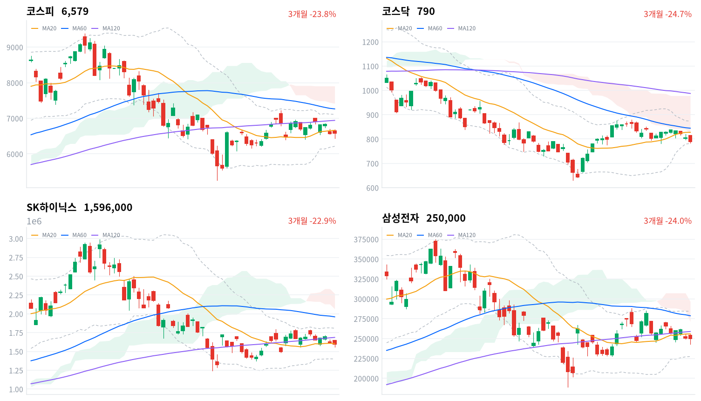
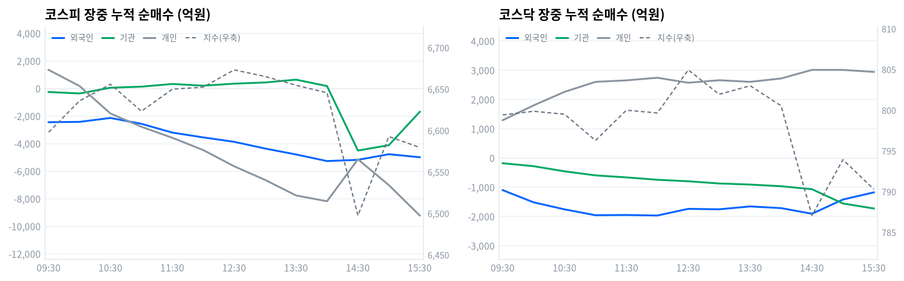

코스피는 오늘 장중 한때 1.8% 넘게 올랐다가 미국-이란 교전 재격화로 오후 한때 -1.9%까지 밀렸고, 결국 0.26% 오른 6,579.48로 마감했다. 손해보험·조선·건설 등 방어·경기민감 업종이 폭넓게 오르며 지수를 지켰다.
코스닥은 하루 종일 부진에서 벗어나지 못하고 1.71% 내린 790.21로 800선을 반납했다. 코스피에서는 기관이 9,143억원 순매수, 개인이 9,552억원 순매도했다(당일 잠정).
코스피는 오늘 장중 한때 1.8% 넘게 올랐다가 미국-이란 교전이 다시 격화되며 오후 한때 -1.9%까지 밀렸고, 결국 0.26% 오른 6,579로 마감했다. 코스닥은 하루 종일 부진을 벗어나지 못하고 1.71% 내린 790으로 800선을 반납했다.
이 하루 안에서도 온도차가 뚜렷했다. 손해보험(+5.77%)·조선(+4.18%)·건설(+3.74%) 같은 방어·경기민감 업종이 폭넓게 오르며 지수를 지탱한 반면, 반도체(-0.63%)와 코스닥 대형 성장주는 약세를 벗어나지 못했다. 개인이 코스피에서 9,552억원을 순매도(당일 잠정)하는 사이 기관은 9,143억원을 순매수(당일 잠정)했는데, 정작 프로그램 매매의 비차익은 4,040억원 순매도로 돌아서 있어 기관 매수의 성격이 단순하지 않다.
위험 노출은 다음 세션까지 축소한다. 지정학 재료 하나가 하루 만에 지수를 오르내리게 한 데다 코스닥이 800선 아래로 밀렸다. 코스피 장중 스냅샷에서는 외국인·기관이 각각 4,996억원·1,700억원 순매도로 잡혔다가 마감 집계에서 순매수 쪽으로 뒤집혀, 수급 방향 자체가 아직 흔들리고 있다는 뜻이라 지금은 노출을 늘릴 때가 아니다.
코스피가 20일 이동평균(6,662)을 다시 회복하면 이 판단을 재검토한다. 오늘 급락 뒤 되돌림이 아니라 추세 전환의 신호일 수 있어서다. 반대로 외국인이 코스피에서 순매도로 완전히 돌아서거나 호르무즈 정세가 추가로 악화되면, 오늘 오후 낙폭을 만든 두 압력이 다시 겹친다는 뜻이라 축소 기조를 그대로 유지한다.
전일(9월2일) 미국 증시는 3대 지수가 모두 올랐다. S&P500이 0.46%, 나스닥이 0.45%, 다우가 0.56% 상승했다.
같은 시간대 아시아는 대체로 약세였다. 닛케이가 -0.17%, 항셍이 -0.39%, 대만가권이 -0.67%로 밀렸고 상해종합만 0.02% 소폭 올랐다. 아시아 평균은 -0.30%였는데 코스피(+0.26%)는 이보다 0.56%포인트 높게 마쳐 역내에서 상대적으로 강했다.
한국 정규장이 열린 시간대 미국 선물은 E-mini S&P500이 0.01%, 나스닥 선물이 0.06% 오르며 거의 움직이지 않았다. 코스피는 전일 종가(6,563)보다 높은 6,650에서 출발해 갭업으로 하루를 시작했다.
코스피는 오전 9시 6,650에서 출발해 낮 12시반 6,673까지 오르며 이 시각까지의 고점권을 만들었다. 이후 매도세가 짙어지며 오후 2시반 6,497까지 급락했다가, 3시 6,593까지 되돌리며 강보합으로 정규장을 마쳤다.
코스닥은 오전 9시 814에서 출발해 곧바로 799 안팎으로 밀렸고 낮 12시반 805까지 잠깐 반등했다. 이후 오후 2시반 787까지 다시 밀렸다가 3시 794까지 되돌린 뒤 낮은 자리에서 정규장을 마쳤다.
원/달러 환율은 오전 9시 1,364원으로 하루 중 가장 높았다가 오전 10시 1,355원까지 내렸고, 1,357원으로 정규장을 마쳤다.
오늘을 만든 것은 하나의 재료가 두 번 방향을 바꾼 것이다. 오전 중 미국-이란 교전 우려가 잠시 완화되며 코스피가 장중 급등했지만, 오후 들어 그 우려가 다시 불거지며 유가·미 국채 금리가 급등해 상승분을 고스란히 반납했다. 방어주(보험·은행·건설)로의 순환매가 지수를 지켰고, 코스닥은 대형 성장주(2차전지·바이오) 약세로 그 힘을 받지 못했다.
코스피는 오늘 0.26% 올라 6,579로 마감했다. 장중 고가(6,683)와 저가(6,439) 사이 244포인트를 오르내리며 최근 며칠보다 훨씬 거친 하루를 보냈다. 최근 20거래일 저점(6,159)과 고점(7,217) 사이에서는 아래쪽 절반에 자리한다.
코스닥은 1.71% 내려 790으로 마쳤다. 장중 고가(816)와 저가(783) 사이를 오갔고, 20거래일 저점(777)에 거의 붙어 최근 한 달 등락 구간의 바닥권에서 하루를 마쳤다.
| 지수 | 종가 | 등락률 | 시가 | 고가 | 저가 | 전일 종가 |
|---|---|---|---|---|---|---|
| 코스피 | 6,579.48 | +0.26% | 6,650.33 | 6,682.97 | 6,439.49 | 6,562.72 |
| 코스닥 | 790.21 | -1.71% | 814.31 | 815.79 | 782.87 | 803.98 |
전일 종가(6,563)보다 높은 6,650에서 출발한 코스피는 오전 내내 완만히 오르며 낮 12시반 6,673까지 고점권을 넓혔다.
이후 매도세가 짙어지며 코스피는 오후 2시 6,645에서 2시반 6,497까지 짧은 시간에 급락했다. 미국-이란 교전이 다시 격화됐다는 소식이 그 급락의 직접 계기였다.
코스피는 3시 6,593까지 낙폭을 되돌린 뒤 그 자리 부근에서 정규장을 마쳐, 장중 최저치에서는 벗어났지만 오전 고점권과는 여전히 거리가 있었다.
코스닥은 9시 814에서 출발해 9시반 799까지 곧바로 밀렸다. 이후 796~805 사이를 오가다 오후 2시반 787까지 재차 하락했고, 3시 794까지 되돌렸지만 낮은 자리에서 마쳐 하루 종일 부진에서 벗어나지 못했다.
20일 이동평균(6,662) 대비로는 코스피가 1.23% 낮은 자리에서 마쳤다. 코스닥도 20일 이동평균(828) 대비 4.53% 낮아 코스피보다 이동평균에서 더 멀리 떨어져 있다.

코스피·코스닥·SK하이닉스·삼성전자 3개월 일봉에 이동평균(20·60·120)·볼린저밴드·일목균형표 구름대를 오버레이했다. 상승 캔들은 녹색, 하락 캔들은 적색으로 표시된다.
코스피(6,579)는 이동평균이 뒤섞인 혼조 구간에서 20일 이동평균(6,662) 아래, 일목 기준선(6,240) 위에 자리한 채 마감했다. 이동평균을 다시 회복하면 120일 이동평균(6,941)까지 반등 여지가 열리고, 기준선이 무너지면 20일 저점(6,159)까지 지지가 빈다.
코스닥(790)은 이동평균이 역배열로 무너진 채 일목 전환선(811)을 바로 위 저항, 볼린저 하단(782)을 바로 아래 지지로 두고 마감했다. 전환선을 넘어서면 20일 이동평균(828)까지 반등 여지가 있고, 볼린저 하단이 무너지면 일목 기준선(755)까지 지지가 빈다.
SK하이닉스(160만원)는 이동평균이 혼조인 채 20일 이동평균(160만원)에 바짝 붙어 마감해 일목 전환선(167만원)을 다음 저항으로 두고 있다. 전환선을 넘어서면 120일 이동평균(169만원)까지 반등 여지가 있고, 기준선(152만원)이 무너지면 가까운 지지가 마땅치 않다.
삼성전자(25만원)는 이동평균이 혼조인 가운데 일목 기준선(24만원) 위, 20일 이동평균(26만원) 아래에서 마감했다. 이동평균을 넘어서면 일목 구름 하단(27만원)까지 반등 여지가 있고, 기준선이 무너지면 20일 저점(23만원)까지 지지가 빈다.
위 레벨은 이동평균·볼린저밴드·일목균형표와 스윙 고저를 기계적으로 계산한 값이며 투자 권유가 아니다.
| 주체 | 순매수(억원) |
|---|---|
| 개인 | -9,552 |
| 외국인 | +414 |
| 기관 | +9,143 |
| 주체 | 순매수(억원) |
|---|---|
| 개인 | +2,950 |
| 외국인 | -1,082 |
| 기관 | -1,838 |
코스피에서는 개인과 기관이 정반대로 움직였다(당일 잠정). 개인이 순매도한 만큼을 기관이 사들였고, 외국인은 414억원 순매수에 그쳐 사실상 중립에 가까웠다.
기관이 사들인 덕에 코스피는 오후 급락분을 상당 부분 되돌리고 강보합으로 마감할 수 있었다.
코스닥에서는 개인만 순매수했고 외국인·기관은 나란히 팔았다(당일 잠정). 매수 주체가 있었는데도 지수는 1.71% 내렸다 — 방어할 힘이 부족했다는 뜻이다.

누적 순매수(억원), 정규장 09:30~15:30 30분 앵커 기준. 지수는 우측 축.
| 시각 | 코스피(억원) | 코스닥(억원) | ||||
|---|---|---|---|---|---|---|
| 개인 | 외국인 | 기관 | 개인 | 외국인 | 기관 | |
| 09:30 | +1,343 | -2,453 | -264 | +1,289 | -1,103 | -183 |
| 10:00 | +171 | -2,429 | -368 | +1,796 | -1,520 | -284 |
| 10:30 | -1,826 | -2,146 | +48 | +2,259 | -1,761 | -460 |
| 11:00 | -2,785 | -2,570 | +126 | +2,600 | -1,961 | -598 |
| 11:30 | -3,586 | -3,209 | +321 | +2,652 | -1,953 | -667 |
| 12:00 | -4,476 | -3,558 | +197 | +2,741 | -1,971 | -748 |
| 12:30 | -5,655 | -3,877 | +343 | +2,570 | -1,743 | -800 |
| 13:00 | -6,643 | -4,365 | +430 | +2,656 | -1,758 | -875 |
| 13:30 | -7,770 | -4,796 | +634 | +2,601 | -1,660 | -912 |
| 14:00 | -8,192 | -5,274 | +168 | +2,716 | -1,718 | -969 |
| 14:30 | -5,145 | -5,185 | -4,511 | +3,010 | -1,911 | -1,071 |
| 15:00 | -7,022 | -4,778 | -4,122 | +3,009 | -1,424 | -1,559 |
| 15:30 | -9,226 | -4,996 | -1,700 | +2,941 | -1,180 | -1,731 |
코스피 외국인은 뚜렷한 방향 전환 없이 종일 순매도 기조를 이어갔다. 누적 순매도는 오전 9시1분 455억원에서 오후 2시12분 5,577억원까지 불어나 이 구간에서 가장 깊었는데, 이 시점은 코스피가 오후 2시반 6,497까지 급락하기 직전과 거의 맞물린다.
기관은 두 차례 방향을 바꿨다. 오전 10시21분 순매도에서 순매수로 돌아서 10시36분 615억원 매수로 정점을 찍었다. 오후 2시7분 다시 순매도로 돌아서 2시37분 5,453억원 매도로 저점을 만들었는데, 두 번째 전환 시점은 코스피 급락 구간과 거의 겹친다.
정규장 마지막 관측에서 코스피 기관 순매도(1,700억원)의 대부분은 선물·프로그램 연계인 금융투자(1,697억원 순매도)에서 나왔다. 정책성 장기자금인 연기금등은 오히려 621억원 순매수로 반대 방향이었다. 코스닥도 금융투자가 903억원 순매도로 기관 매도(1,731억원)의 절반 이상을 차지했다.
정규장 마지막 관측에서 마감 집계(당일 잠정)로 넘어가며 코스피 수급은 크게 뒤집혔다. 외국인은 4,996억원 순매도에서 414억원 순매수로 방향이 바뀌었고, 기관도 1,700억원 순매도에서 9,143억원 순매수로 돌아섰다.
개인은 9,226억원 순매도에서 9,552억원 순매도로 큰 차이가 없었다. 코스닥은 세 주체 모두 마지막 관측과 마감 집계가 비슷해 큰 정정이 없었다.
다음 거래일에는 코스피 외국인·기관의 이 반전이 실제 매수 심리 개선인지, 아니면 마감 뒤 집계 과정에서 늘 있는 일인지를 지켜봐야 한다.
| 시장 | 차익 순매수(억원) | 비차익 순매수(억원) | 전체 순매수(억원) |
|---|---|---|---|
| 코스피 | +52 | -4,040 | -3,988 |
| 코스닥 | -46 | -1,316 | -1,362 |
코스피 프로그램 매매는 방향성 바스켓인 비차익이 4,040억원 순매도로 전체(3,988억원 순매도)를 사실상 다 설명했다(당일 잠정). 이는 정규장 마지막 관측에서 본 기관 금융투자의 순매도와 방향이 같다.
차익은 오히려 52억원 순매수에 그쳐 선물 연계 기계적 매매는 거의 움직이지 않았다. 프로그램의 방향은 기관의 최종 확정 순매수(9,143억원)와는 정반대라, 프로그램 밖의 다른 기관 자금이 그보다 훨씬 큰 규모로 순매수에 나섰다고 봐야 한다.
코스닥 프로그램은 비차익이 1,316억원 순매도로 전체(1,362억원 순매도)의 대부분을 차지했다(당일 잠정). 코스닥 기관의 확정 순매도(1,838억원)와 견주면 프로그램이 매도의 상당 부분을 설명한다.
| 순위 | 종목/ETF | 구분 | 거래대금 | 비고 |
|---|---|---|---|---|
| 1 | SK하이닉스 | 개별주 | 4.24조원 | - |
| 2 | 삼성전자 | 개별주 | 3.44조원 | - |
| 3 | 반도체 테마 ETF | 테마·롱 | 0.96조원 | 6종 합산 |
| 4 | 삼성전자우 | 개별주 | 0.35조원 | - |
| 5 | SK하이닉스 레버리지 | 레버리지·롱 | 0.26조원 | 2종 합산 |
| 6 | 2차전지 테마 ETF | 테마·롱 | 0.26조원 | 5종 합산 |
| 7 | 두산에너빌리티 | 개별주 | 0.25조원 | - |
| 8 | KODEX 200타겟위클리커버드콜 | ETF | 0.16조원 | - |
| 9 | 삼성중공업 | 개별주 | 0.15조원 | - |
| 10 | 삼성전자 레버리지 | 레버리지·롱 | 0.15조원 | 2종 합산 |
단위 백만원 원본을 조 단위로 환산. 같은 기초자산 ETF는 방향별로, 같은 테마 섹터 ETF는 테마별로 묶었으며 코스피200·코스닥150 추종 지수 ETF 및 그 레버리지·인버스, 해외 ETF는 제외했다.
개별 반도체 3종목(SK하이닉스·삼성전자·삼성전자우) 합산 거래대금은 8.03조원으로, 반도체 테마 ETF 6종을 합친 0.96조원의 8.4배에 이른다. 반도체가 약세였던 하루에도 자금은 바스켓이 아니라 개별 종목으로 직접 몰렸다.
SK하이닉스 레버리지(0.26조원, 2종 합산)와 삼성전자 레버리지(0.15조원, 2종 합산)는 나란히 10위권에 들었지만 인버스 상품은 이름을 올리지 못했다. 두 종목이 약세였던 하루에도 개인 자금 일부는 반등 베팅 쪽으로 향했다는 뜻이다.
2차전지 테마 ETF(0.26조원, 5종 합산)가 뒤를 이었다. 두산에너빌리티(0.25조원)·KODEX 200타겟위클리커버드콜(0.16조원)·삼성중공업(0.15조원)도 상위권에 이름을 올렸는데, 두산에너빌리티·삼성중공업은 조선·에너지 업종의 폭넓은 강세와 함께 거래가 몰렸다.
하루 기준으로는 60개 업종 중 33개가 올랐다. 손해보험(+5.77%)·조선(+4.18%)·건설(+3.74%)이 상승률 상위를 차지했다.
이 셋은 데이터 크로스체크에서도 폭넓은 상승 주도로 확인된다. 손해보험은 12종목 전부가, 조선은 30종목 중 23개가 함께 올랐다.
건설도 78종목 중 37개가 동반 상승했다 — 몇몇 종목이 만든 착시가 아니라 업종 전반의 힘이었다.
반면 전기제품(+2.63%)·우주항공과국방(+1.8%)은 상승률이 높은데도 오른 종목이 각각 27%, 32%에 그쳐 좁은 상승·개별종목 판정을 받았다 — 상승률만 보고 주도 업종이라 부르기 어렵다.
반도체와반도체장비는 -0.63%로 내렸는데, 171종목 중 오른 것은 26개(15%)뿐이었다. 대형주뿐 아니라 업종 전반이 고르게 눌린 하루였다.
SK하이닉스(160만원)·삼성전자(25만원)는 오늘 거래대금 1·2위를 나란히 차지했다. 한국경제는 두 종목이 유가·금리 급등, 전날 미국 필라델피아반도체지수 약세, 중국 창신메모리(CXMT)의 HBM3E 소량 생산 보도까지 겹치며 약세를 보였다고 전했다.
데일리머니는 두산에너빌리티(거래대금 7위, 0.25조원)가 원자력·가스발전 부문에서 2026년 총 14.3조원 규모 신규 수주 전망을 유지하고 있다고 전했다. 여기에 지정학 리스크 확대에 따른 에너지·인프라 관련주 순환매까지 겹쳤다.
CBC뉴스는 삼성중공업(9위, 0.15조원)이 조선 업종 전반의 강세에 동반 상승했다고 전했다. 조선 업종은 오늘 크게 오르며 데이터 크로스체크에서도 폭넓은 상승 주도로 확인됐다.
머니투데이는 미국-이란 교전 재확전으로 지정학 리스크·금리 변동성이 커지자 투자자들이 손해보험·은행 등 고배당·경기방어 업종으로 이동했다고 전했다. 손해보험·은행의 폭넓은 오늘 상승이 이 흐름과 정확히 맞아떨어진다.
원/달러 환율은 오늘 정규장에서 1,364원에서 1,355원 사이를 오갔고 1,357원으로 마쳤다. 국고채 10년물은 4.367%로 전일보다 5.1bp 내렸고 3년물도 3.888%로 4.2bp 내려, 8월 기준금리 인상 이후 이어지던 금리 상승세가 이날은 진정됐다.
| 지표 | 금리 | 전일比(bp) | 기준일 |
|---|---|---|---|
| 국고채 3년 | 3.888% | -4.2 | 2026-09-03 |
| 국고채 10년 | 4.367% | -5.1 | 2026-09-03 |
| CD 91일 | 3.120% | 0.0 | 2026-09-03 |
| 회사채 AA- 3년 | 4.567% | -3.3 | 2026-09-03 |
| 한국은행 기준금리 | 3.00% | +25.0(전월比) | 2026-08 |
장기물과 단기물의 금리차(10년-3년)는 47.9bp로 전일 48.8bp보다 좁혀졌다. 장기물이 단기물보다 더 크게 내린 결과라, 방향은 완만한 불 플래트닝이다.
회사채 AA- 3년물과 국고채 3년물의 신용 스프레드는 67.9bp로 전일 67.0bp보다 소폭 벌어졌다. 금리가 전반적으로 내린 가운데서도 신용 스프레드는 오히려 커졌다.
CD 91일물은 3.120%로 전일과 변화가 없었다. 국채·회사채 금리가 나란히 내린 것과 달리 단기 지표금리만 멈춰 서 있다 — 통화정책 기대가 움직인 자리는 아니라는 뜻이다. 다만 오늘은 미국-이란 교전 재확전으로 지정학 리스크가 오히려 커진 날이라, 금리가 내린 이유를 이 자료만으로 특정하기는 어렵다.
국고채 3년물(3.888%)은 기준금리(3.00%)보다 89bp 높은 자리다. 채권시장이 여전히 추가 긴축이나 물가 프리미엄을 어느 정도 선반영하고 있다는 뜻으로 읽을 수 있다.
장중 스냅샷 기준으로 외국인이 코스피에서 4,996억원 순매도로 잡혀 있던 시간에도 원화는 오히려 하루 종일 강세 쪽으로 움직였다. 확정치로 넘어와 외국인이 414억원 순매수로 바뀐 것과 방향이 맞는다.
PwC 삼일·신영김장에 따르면 자기주식 소각 의무화를 담은 3차 상법 개정안은 2월 25일 국회 본회의를 통과해 3월 6일 공포·즉시 시행됐다. 자기주식은 의결권·신주인수권·배당권 등 권리가 제한되고, 취득 후 원칙적으로 1년 안에 소각해야 한다. 후속 세제 개편안은 자기주식 취득·처분을 자본거래로 일원화하는 방향으로 마련됐다.
소각 의무화는 유통주식 수를 줄여 주당가치 희석을 완화한다. 이 경로는 밸류업 지수 편입 종목과 거버넌스 개선 기대주의 멀티플 확대로 이어진다.
자사주 매입 여력이 큰 대형 우량주와 배당성향 높은 금융지주가 수혜 후보다. 오늘 은행(+3.25%)·손해보험(+5.77%)이 폭넓게 올랐지만, 이 상승은 지정학발 방어주 로테이션이 더 크게 작용한 결과다.
이 세제 재료가 오늘의 상승을 직접 설명한다고 보기는 어려워, 아직 가격에 온전히 반영되지 않은 재료로 남아 있다.
신영김장에 따르면 자사주 관련 세제 개편안은 8월 20일까지 입법예고를 마치고 국무회의를 거쳐 9월 초 정기국회에 제출될 예정이다. 정기국회 심의 일정을 다음 확인 트리거로 둔다.
헤럴드경제·한국일보·이데일리는 한국 정부가 9월 1일부터 고성능 AI용 집적회로·반도체 제조장비 등 첨단 이중용도 품목을 전략물자로 추가 지정해 수출 시 산업부 허가를 받도록 했다고 전했다. 미국은 한국·일본·대만·EU산 폴리실리콘에 15% 관세를 적용 중이고, 트럼프 행정부는 미국 내 생산투자와 관세 혜택을 연계하는 표적관세를 준비하고 있다.
수출 허가 절차가 늘면 반도체 장비·소재 기업의 납기·계약 불확실성이 커진다. 미국 내 생산시설 유무에 따라 관세 부담이 기업별로 갈리며 밸류에이션이 차별화되는 경로다.
미국 내 파운드리·패키징 투자를 진행 중인 삼성전자는 관세를 피할 여지가 있지만 소재·장비 협력사는 비용 부담이 커질 수 있다. 오늘 반도체와반도체장비 업종은 -0.63%로 내렸고 SK하이닉스·삼성전자가 거래대금 1·2위를 나란히 차지하며 매도 표적이 됐다.
오늘의 약세는 유가·금리 급등과 중국 경쟁 우려가 더 직접적인 원인이라, 이 통상 재료는 아직 가격에 뚜렷이 반영되지 않았다.
미국 반도체 표적관세의 세부 시행령 발표 여부와 국내 전략물자 지정 품목의 개별 수출허가 처리 현황을 다음 확인 트리거로 둔다.
아시아경제·한국경제는 미국과 이란의 무력 충돌이 다시 격화되며 브렌트유가 배럴당 95달러, WTI가 90달러를 넘어섰다고 전했다. 호르무즈해협을 통과한 선박은 최근 10일 평균(약 13척)의 3분의 1에도 못 미치는 하루 4척으로 급감했다.
유가 급등은 물가·금리에 상방 압력을 주고 위험자산 회피 심리를 키운다. 국내에서는 이 경로가 보험·은행 등 방어주로의 자금 이동과 조선·정유의 반사이익, 반도체 같은 고밸류 성장주의 할인율 부담으로 갈려 나타났다.
오늘 손해보험·은행이 폭넓게 올랐고 조선도 데이터 크로스체크에서 폭넓은 상승 주도로 확인되며 이 경로와 정확히 맞아떨어졌다. 반도체 업종도 내려 고밸류 성장주 약세 경로가 그대로 나타났다 — 오늘 가격은 이 재료를 이미 상당 부분 반영했다고 볼 수 있다.
코스피가 낮 시간대 고점권을 만든 뒤 오후 들어 급락으로 돌아선 것도 이 재료와 시점이 겹친다. 오전 중 잠시 누그러졌던 우려가 오후 들어 다시 불거지며 상승분을 되돌린 것으로 볼 수 있다.
호르무즈해협 통항량 추이와 미국·이란 양측의 추가 군사 조치 여부를 다음 확인 트리거로 둔다.
한국은행에 따르면 8월 기준금리는 2.75%에서 3.00%로 25bp 올랐다. 2026년 통화정책방향 결정회의는 1·2·4·5·7·8·10·11월에, 금융안정회의는 3·6·9·12월에 열리도록 확정돼 있어 9월에는 기준금리를 결정하는 금통위 본회의가 없다.
회의 공백 동안 시장은 10월 금통위까지 국채 금리·환율 변동성에 그대로 노출된다.
오늘 국고채 3년물(-4.2bp)과 10년물(-5.1bp)이 나란히 내려 8월 인상 이후 이어지던 금리 상승세가 일단 진정된 모습이다. 금리 하향 안정은 건설(+3.74%)·부동산 관련주에 우호적이지만, 오늘 건설의 강세는 지정학발 방어주 로테이션이 더 크게 작용한 결과로 보여 금리 재료가 단독으로 가격을 움직였다고 보기는 이르다.
10월 통화정책방향 결정회의를 다음 확인 트리거로 둔다.